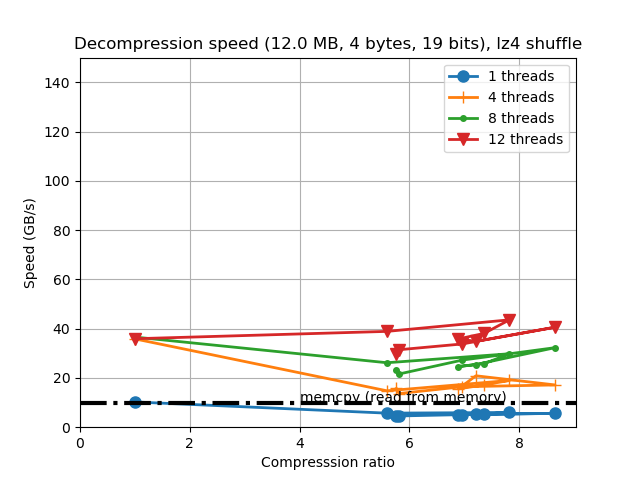

C-Blosc Beast Release
TL;DR; The improvements in new CPUs allow for more cores and (much) larger caches. Latest C-Blosc release leverages these facts so as to allow better compression ratios, while keeping the speed on par with previous releases.
During the past two months we have been working hard at increasing the efficiency of Blosc for the new processors that are coming with more cores than ever before (8 can be considered quite normal, even for laptops, and 16 is not that unusual for rigs). Furthermore, their caches are increasing beyond limits that we thought unthinkable just a few years ago (for example, AMD is putting 64 MB in L3 for their mid-range Ryzen2 39x0 processors). This is mainly a consequence of the recent introduction of the 7nm process for both ARM and AMD64 architectures. It turns out that compression ratios are quite dependent on the sizes of the streams to compress, so having access to more cores and significantly larger caches, it was clear that Blosc was in a pressing need to catch-up and fine-tune its performance for such a new 'beasts'.
So, the version released today (C-Blosc 1.20.0) has been carefully fine-tuned to take the most of recent CPUs, specially for fast codecs, where even if speed is more important than compression ratio, the latter is still a very important parameter. With that, we decided to increase the amount of every compressed stream in a block from 64 KB to 256 KB (most of CPUs nowadays have this amount of private L2 cache or even larger). Also, it is important to allow a minimum of shared L3 cache to every thread so that they do not have to compete for resources, so a new restriction has been added so that no thread has to deal with streams larger than 1 MB (both old and modern CPUs seem to guarantee that they provide at least this amount of L3 per thread).
Below you will find the net effects of this new fine-tuning of fast codecs like LZ4 and BloscLZ on our AMD 3900X box (12 physical cores, 64 MB L3). Here we will be comparing results from C-Blosc 1.18.1 and C-Blosc 1.20.0 (we will skip the comparison against 1.19.x because this can be considered an intermediate release in our pursuit). Spoiler: you will be seeing an important boost of compression ratios, while the high speed of LZ4 and BloscLZ codecs is largely kept.
On the plots below, on the left is the performance of 1.18.1 release, whereas on the right is the performance of the new 1.20.0 release.
Effects in LZ4
Let's start by looking at how the new fine tuning affected compression performance:
|
|


Look at how much compression ratio has improved. This is mainly a consequence of using compression streams of up to 256 KB, instead of the previous 64 KB --incidentally, this is just for this synthetic data, but it is clear that real data is going to be benefited as well; besides, synthetic data is something that frequently appears in data science (e.g. a uniformly spaced array of values). One can also see that compression speed has not dropped in general which is great considering that we allow for much better compression ratios now.
Regarding decompression we can see a similar pattern:
 |
|

So the decompression speed is generally the same, even for data that can be compressed with high compression ratios.
Effects in BloscLZ
Now it is the turn for BloscLZ. Similarly to LZ4, this codec is also meant for speed, but another reason for its existence is that it usually provides better compression ratios than LZ4 when using synthetic data. In that sense, BloscLZ complements well LZ4 because the latter can be used for real data, whereas BloscLZ is usually a better bet for highly repetitive synthetic data. In new C-Blosc we have introduced BloscLZ 2.3.0 which brings a brand new entropy detector which will disable compression early when entropy is high, allowing to selectively put CPU cycles where there are more low-hanging data compression opportunities.
Here it is how performance changes for compression:
|
|


In this case, the compression ratio has improved a lot too, and even if compression speed suffers a bit for small compression levels, it is still on par to the original speed for higher compression levels (compressing at more than 30 GB/s while reaching large compression ratios is a big achievement indeed).
Regarding decompression we have this:
|
|


As usual for the new release, the decompression speed is generally the same, and performance can still exceed 80 GB/s for the whole range of compression levels. Also noticeable is that fact that single-thread speed is pretty competitive with a regular memcpy(). Again, Ryzen2 architecture is showing its muscle here.
Final Thoughts
Due to technological reasons, CPUs are evolving towards having more cores and larger caches. Hence, compressors and specially Blosc, has to adapt to the new status quo. With the new parametrization and new algorithms (early entropy detector) introduced today, we can achieve much better results. In new Blosc you can expect a good bump in compression ratios with fast codecs (LZ4, BloscLZ) while keeping speed as good as always.
Appendix: Hardware and Software Used
For reference, here it is the software that has been used for this blog entry:
Hardware: AMD Ryzen2 3900X, 12 physical cores, 64 MB L3, 32 GB RAM.
OS: Ubuntu 20.04
Compiler: Clang 10.0.0
-
C-Blosc: 1.18.1 (2020-03-29) and 1.20.0 (2020-07-25)
** Enjoy Data!**
Comments
Comments powered by Disqus